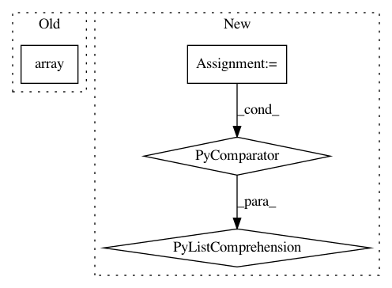

2c5f22199b46837b9801378ce172dcd13f125769,gluonnlp/vocab/subwords.py,ByteSubwords,__call__,#ByteSubwords#Any#,120
Before Change
def __call__(self, words):
return [
nd.array(np.frombuffer(word.encode(self.encoding), dtype=np.uint8).astype(np.int_))
for word in words
]
def __len__(self):
After Change
if sys.version_info[0] == 3:
return [list(word.encode(self.encoding)) for word in words]
else:
return [
list((ord(c) for c in word.encode(self.encoding)))
for word in words
]
def __len__(self):
return 256
In pattern: SUPERPATTERN
Frequency: 3
Non-data size: 4
Instances
Project Name: dmlc/gluon-nlp
Commit Name: 2c5f22199b46837b9801378ce172dcd13f125769
Time: 2018-07-17
Author: leonard@lausen.nl
File Name: gluonnlp/vocab/subwords.py
Class Name: ByteSubwords
Method Name: __call__
Project Name: ray-project/ray
Commit Name: 36bda8432b2ed23f623c8c3031b2cba148bec93b
Time: 2020-10-01
Author: sven@anyscale.io
File Name: rllib/examples/policy/episode_env_aware_policy.py
Class Name: EpisodeEnvAwarePolicy
Method Name: compute_actions_from_input_dict
Project Name: microsoft/nni
Commit Name: 89fa23cb77746d36b4f1ff6cd4fcefbab18c7d70
Time: 2020-06-11
Author: 38930155+chicm-ms@users.noreply.github.com
File Name: src/sdk/pynni/tests/test_compressor.py
Class Name: CompressorTestCase
Method Name: test_torch_l1filter_pruner